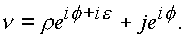

|
В. И. ЕЛИСЕЕВ ВВЕДЕНИЕ В МЕТОДЫ ТЕОРИИ
ФУНКЦИЙ ПРОСТРАНСТВЕННОГО КОМПЛЕКСНОГО ПЕРЕМЕННОГО |
|
1.1.6. Пространство делителей нуля. Геометрическая иллюстрация.
Преобразуем аргумент
a комплекса v в формуле (1.5.), Положимтогда (здесь,
a - угол)(1.6.) |
В формуле (1.6.) комплекс v имеет все параметры R, , S, s - действительные числа.
Исследуем комплекс (1.6.). Положим
тогда
Далее,
если,  , тогда S=s =0,
, тогда S=s =0,
Значит, угол f есть угол между проекцией r вектора
R на плоскость (1, i) и осью i, то есть, имеем обычную комплексную плоскость;если
y=h =0, тогда n =x+jx ,откуда следует, что угол S есть угол между проекцией
R2 вектора R на плоскость (1, j) и осью 1;пусть
y=x =0, тогдаи согласно (6) будем иметь f
=0, S=0,Значит,
s - угол между проекцией R3 вектора R на плоскость (1, ij) и осью 1. Формула (1.6.) показывает, что пространственный модуль является действительной величиной. Кроме того, выполняется соотношение(1.7.) |
или
Следовательно, элементы пространства, у которых аргументы f
, y в комплексах e , s не равны , будут внутренними элементами пространства, у которых f =y .В цилиндрических координатах пространство (n ) является пространством выколотых e - цилиндров, восстановленных к плоскости (
z). Каждая точка пространства имеет в качестве окрестности окружность радиуса e > 0, которая лежит в плоскости, параллельной плоскости (z), рис. 4, 6.Рис. 9. Конус-фильтр делителей нуля в четырехмерном комплексном пространстве
Рис. 10. Построение двойной границы конуса-фильтра делителей нуля
Если
arg z = arg s , то окружность вырождается в точку, так же, как вырождается в точку радиус центральной осиКомплексное пространство
(v) содержит подпространство делителей нуля. Делители нуля выделяются из пространства при соблюдении двух условий, когда(1.8.) |
Единичный элемент делителя нуля изображен на рис. 6, на рис. 8 приведен комплексный делитель нуля. На рис. 7 показано пространственное расположение множества элементов делителей нуля. При условии (1.8.) комплекс выразится в виде
Составляющий вектор
jr eif (аппликата) идет по образующей, которая фиксирована на цилиндрической оси углом f , и повернут относительно комплекса, лежащего в плоскости (z) на p /2. Модули составляющих комплексов равны по величине r=r (рис. 8).Множество элементов делителей нуля образуют в пространстве в цилиндрических координатах конус-фильтр дискретных точек (см. рис. 9, 10, 11).
Конус-фильтр элементов
делит пространство на две части, причем этот конус можно рассматривать как поворот поверхности конуса, у которого r=r , относительно другой поверхности этого же конуса - на p /2. В результате образуется двойная граница, которая и представлена на рис. 9, 10, 11. Двойная граница не изолирует обе части друг от друга.Из одной части пространства можно пройти в другую часть по непрерывным кривым или прямым типа
y1, С1, С2 на которых не соблюдаются условия (1.8.). Двойная граница конуса-фильтра может быть пройдена в окрестности точек, которые создают эту двойную границу:Рис. 11. Двойная граница конуса-фильтра в четырехмерном пространстве
либо в окрестности точки
либо в окрестности точки

Конус-фильтр в сферических координатах сворачивается в цилиндрическую ось радиуса
(1.9.) |
Формула (9) определяет все элементы делителей нуля в сферических координатах.
При коммутативном умножении векторов
ij=ji имели очевидное равенство(1.10.) |
В этом равенстве нет неопределенности. Однако до настоящего времени открыт вопрос о равенстве произведения двух чисел нулю, если ни один из них не равен нулю. В пространстве чисел имеем
однако
Преобразуем сумму и разность единичных векторов по формуле (1.9.). Делители нуля не равны тождественно нулю и их запись по формуле (1.9.) не эквивалентна неопределенному выражению:
Модули делителей нуля равны корню из нуля, также не равному тождественно нулю ввиду наличия в комплексе изолированного направления аргумента
В действительном и плоском комплексном пространстве корень из нуля тождественно равен нулю. В пространстве вследствие наличия изолированного направления, выражаемого через функцию
arctg в изолированной точке i, корень из нуля не равен тождественно нулю. Если корень из нуля приравнять к нулю, то в этом случае будет нарушены операция преобразования комплекса при переходе от цилиндрических к сферическим координатам.Комплексная алгебра расшифровывает очевидное равенство (1.10.) и не требует накладывания на единичные векторы
i, j и их произведения дополнительных ограничений, как это выполнено в алгебре гиперкомплексных чисел.[5] или в векторном исчислении,(1.11.) |
Порядок нуля сохраняется, неопределенность отсутствует. Алгебра не требует ограничений, отличных от обычных операций над действительными числами.
Еще раз подчеркнем, что только наличие делителей нуля привело к созданию гиперкомплексных чисел, теория которых оказалась тупиковым вариантом. Векторное исчисление не привело к созданию аппарата наподобие аппарата комплексных чисел и их теории аналитических функций.
По существу, вскрыто свойство делителей нуля. Делители нуля - это числа, представляющие сумму двух комплексов плоских областей
z, s в пространстве (n ). Комплексы z и s имеют равные модули ? z? =? s ? , arg z – arg s = p /2 и аргументы, отличающиеся друг от друга на p /2. В цилиндрических координатах элементы делителей нуля имеют равный корню из нуля модуль.На рис. 8 суммарный комплекс изображен пунктиром. Суммарный комплекс n д
разлагается на два не суммируемых вектора, имеющих равные модули и разные точки приложения в окрестности изолированной оси, повернутые относительно друг друга на p /2. Векторы взаимно перпендикулярны, приложены в разных точках окрестности нуля, равны по величине. Вследствие этого суммарный вектор практически заменяется крутящим моментом (в инженерной терминологии).Таким образом, комплексное пространство имеет третью ось, также комплексную плоскость, свернутую, а цилиндрическую поверхность радиуса корня из нуля. Эта ось заключает в себе изолированное направление
± arctg i. Пространство внутри этой цилиндрической оси принадлежит пространству другого измерения. Пройти эту ось по прямой нельзя (рис. 12, прямая С2 ). Вдали от начала координат огибать эту ось необходимо по прямой С1 с криволинейным участком, огибающим цилиндрическую ось радиуса корня из нуля.Рис. 12. Прохождение цилиндрической комплексной оси по прямым, расположенным на разных уровнях от начало координат
Мини оглавление:
[0], [1.1.1, 1.1.2, 1.1.3, 1.1.4, 1.1.5, 1.1.6, 1.1.7, 1.1.8, 1.2, 1.2.1, 1.2.2, 1.2.2.a, 1.2.2.b, 1.2.2.c, 1.2.2.d, 1.2.2.e, 1.2.2.f, 1.2.2.g, 1.2.2.h, 1.2.3, 1.3.1, 1.3.2, 1.3.3, 1.3.4, 1.3.5, 1.3.6, 1.4.1, 1.4.2, 1.5, 1.6, 1.7.1, 1.7.2, 1.7.3.1, 1.7.3.2, 1.7.3.3, 1.7.4.1, 1.7.4.2, 1.8.1], [2.1, 2.2],[3.1, 3.2, 3.3, 3.4.1, 3.4.2, 3.4.3, 3.4.4, 3.4.5],[4.1, 4.2, 4.3, 4.4],[5.1, 5.1.Рис.52, 5.2, 5.3, 5.4, 5.4.Т1, 5.4.Т2, 5.4.Т3, 5.5.1, 5.5.2, 5.5.3, 5.5.4],[6.1.1, 6.1.2, 6.2.1, 6.2.2, 6.2.3, 6.2.4, 6.2.5, 6.3, 6.4.1, 6.4.2, 6.5.1, 6.5.2],[7.1, 7.2, 7.3, 7.4, 7.5, 7.6, 7.7.1, 7.7.2, 7.8.1, 7.8.2, 7.8.3, 7.9],[8.1, 8.2.1, 8.2.2, 8.3, 8.4, 8.5, 8.6, 8.6.T1, 8.7, 8.8.1, 8.8.2, 8.8.3, 8.9.1, 8.9.2, 8.9.3, 8.10, 8.10.T2, 8.10.T3],[9.1, 9.2, 9.3, Рис.88, 89, 90, 91, 92, 93, 94, 95, 96, 97, 98, 99, 100],[10.1, 10.2, 10.3, 10.4, 10.5, 10.6, 10.7, 10.8, 10.9, 10.10, 10.11, 10.12, 10.13, 10.14, 10.15.1, 10.15.2, 10.16.1, 10.16.2, 10.17, 10.18],[11]
Размещенный материал является электронной версией книги: © В.И.Елисеев, "Введение в методы теории функций пространственного комплексного переменного", изданной Центром научно-технического творчества молодежи Алгоритм. - М.:, НИАТ. - 1990. Шифр Д7-90/83308. в каталоге Государственной публичной научно-технической библиотеки. Сайт действует с 10 августа 1998.
E-mail: mathsru@gmail.com